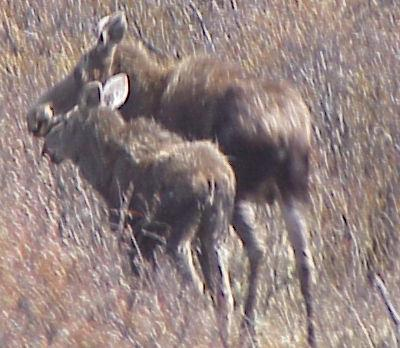
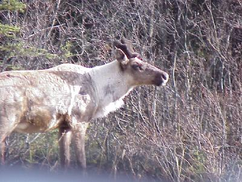
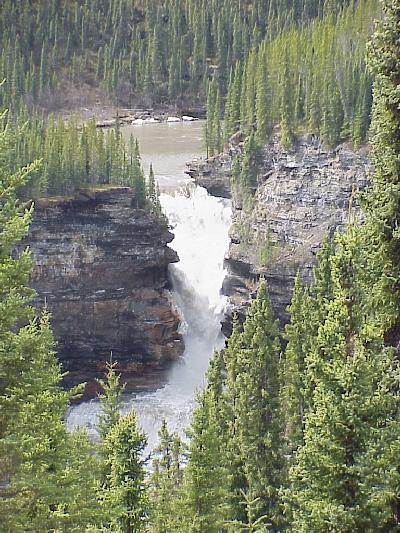

May 24, 3281 miles
| We started the day checking out of the
Ramada Inn at about 8:00. The weather cleared, with a few
less clouds than yesterday. This is also Victoria Day, a holiday in Canada, so many places are closed. This is the last day of their three-day weekend, which for most marks the beginning of summer, so anyone who camps, fishes, or owns an ATV is in the woods for the weekend. |
|
| Finally, the picture my wife has been holding her breath for, MOOSE. Two of them no less. |  |
| And caribou. The first one we saw was on a mission to get across the road ... fast, so we could not get a picture, but this one decided to be remembered forever as a digital image made of ones and zeros and posed for us. |  |
| On our never ending quest to see every waterfall in North America, we figured we just had to see this one. The Sikanni Falls was a 10 mile drive off the highway along a logging road, 15% maximum grade, and then a 1/2 mile walk, but well worth it. |  |
| We pulled into the camp grounds at Stone
Mountian (or Summit Lake) at 7:30 after traveling 356
miles. The camping spot we had was just about 40 feet
from Summit Lake, which is still frozen. The lake and
wide open setting of this campground made for a very
windy night. Most of the miles were on excellent roads, we should be so lucky to have roads like this in Ohio. The only exception was 10 miles of packed gravel, and even that was better than the construction zone on I680 in Youngstown. Our last 25 miles or so were on more or less original Alaskan Highway (the previous miles have been tamed by straightening and leveling). The road base is great, but the curves a little extreme, and there appears to be no funding for guard rails. Wildlife for the day included: moose (2); black bear (1); mule deer (3); stone sheep (2) and caribou (2). OK - Kim, you got me, we got to see the Aurora Borealis tonight. It was not very bright, or colorful, mostly shades of green/blue - too cold to even think about trying to get the camera out. |
|